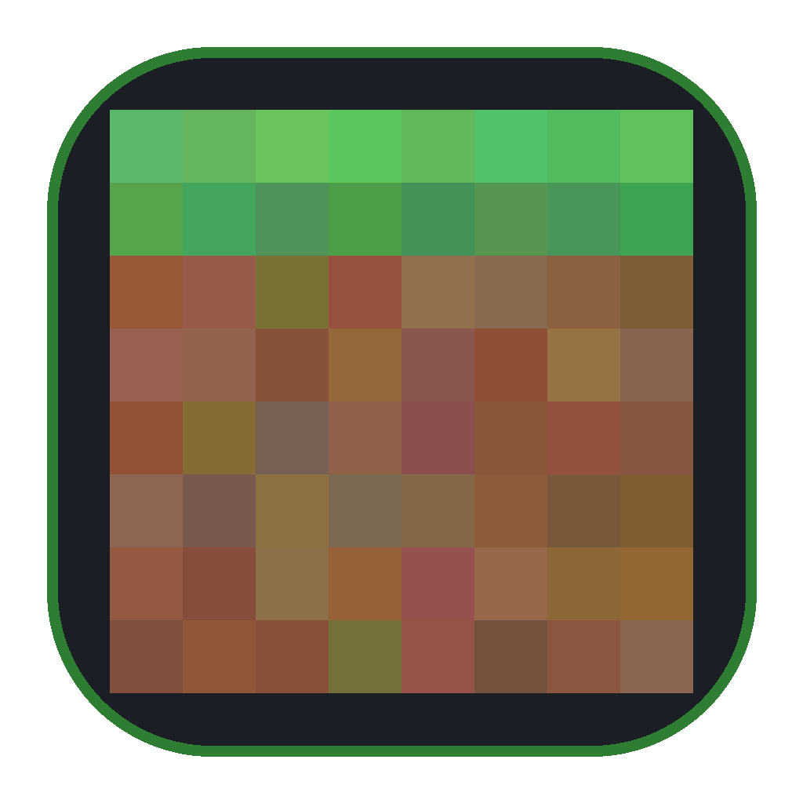
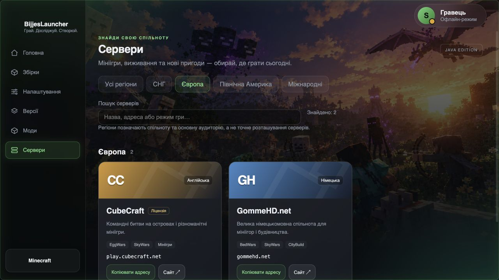

Кожній пригоді — своя збірка.
Поєднуй версію гри, завантажувач і моди. Зберігай різні світи та налаштування окремо.
FabricForgeNeoForge

BijjesLauncher ЗавантажитиВід першого блоку до власної збірки.
Моди, версії та сервери — в одному місці.
v1.0.0/ macOS · Apple Silicon / Безкоштовно

УСЕ ПОЧИНАЄТЬСЯ З ТВОЄЇ ІДЕЇ
Залишай місце для пригод.
А версії, моди й налаштування
тримай під рукою.
Поєднуй версію гри, завантажувач і моди. Зберігай різні світи та налаштування окремо.
Шукай моди в каталогах Modrinth і CurseForge та додавай їх у свої збірки.
Доступ до CurseForge залежить від налаштувань каталогу.Створюй локальні акаунти та перемикай збережені профілі без повторного введення пароля.
Відкрий добірку серверів, обери регіон і скопіюй адресу для підключення в Minecraft.
ВІД ЗАВАНТАЖЕННЯ ДО ПЕРШОГО БЛОКУ
Обери версію для Mac з Apple Silicon. Відкрий файл .dmg і перенеси BijjesLauncher у «Програми».
На першому екрані відкрий «Підключення», вибери акаунти на цьому комп’ютері та створи профіль.
Вибери версію Minecraft або створи збірку. Лаунчер завантажить компоненти гри під час першого запуску.
НАСТУПНИЙ СВІТ ЧЕКАЄ
BijjesLauncher — безкоштовний.
Твоя наступна пригода — безцінна.
ЩЕ КІЛЬКА ВІДПОВІДЕЙ
Так. Завантаження та використання BijjesLauncher безкоштовні. Ліцензія Minecraft купується окремо.
Ні. У цьому випуску немає входу Microsoft. Локальний акаунт задає профіль і нікнейм у лаунчері. Сервери, що перевіряють офіційну авторизацію Minecraft, потребують відповідного входу через сумісний лаунчер.
Наразі доступна збірка для Mac з Apple Silicon — M1 і новіших. Версію macOS та процесор можна перевірити в меню Apple → «Про цей Mac». Підтримка інших платформ запланована.
Цей випуск ще не має цифрового підпису розробника й нотаризації Apple. macOS може обмежити його відкриття. Встановлюй програму лише якщо довіряєш її джерелу; якщо відкриття заблоковано, ознайомся з поясненням macOS у системних параметрах.
У цьому випуску профілі, збірки та світи зберігаються на твоєму комп’ютері. Автоматичної синхронізації між пристроями немає.
Для першого завантаження гри, Java й модів потрібен інтернет. Лаунчер уміє завантажувати відповідну Java та дозволяє вибрати власну. Вимоги до пам’яті залежать від версії Minecraft і модів.